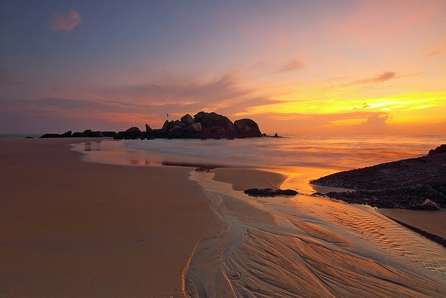
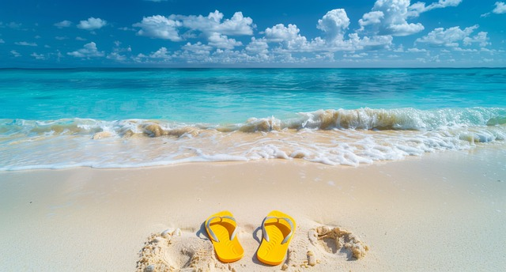
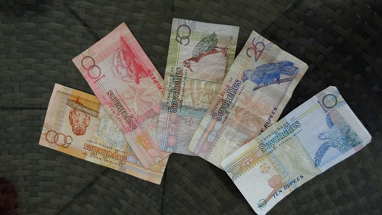
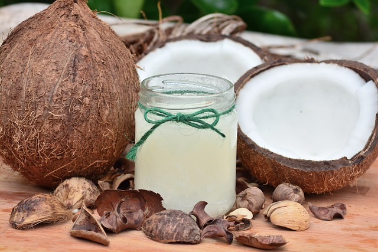
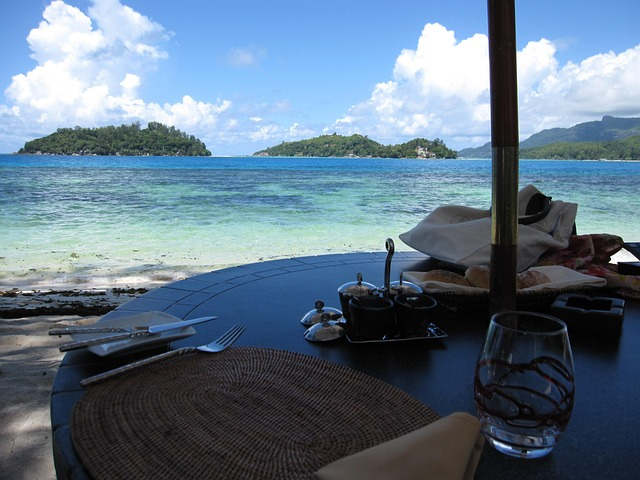

The best time to visit Seychelles is from April to May or October to November, when the weather is more temperate. However, the islands are a year-round destination with warm tropical weather. Enjoy perfect weather year-round, but for the best experience, visit during the shoulder seasons.
Essential Travel Information
Planning your trip to the beautiful Seychelles? Here are some tips to make your experience unforgettable.
Best Time to Visit

Getting Around the Islands

Public transportation is limited, so it’s advisable to rent a car, take taxis, or even rent a bike to explore the islands. Renting a car or bike is the best way to get around and explore the beautiful landscapes of Seychelles.
What to Pack

Pack light clothing, sunscreen, and insect repellent. Comfortable shoes are a must for walking around and exploring the beautiful nature Seychelles has to offer. Don't forget to pack comfortable shoes, and light clothing for tropical weather.
Currency and Payments

The local currency is the Seychellois Rupee (SCR), but US dollars are accepted in many places. Credit cards are widely used, but it’s good to have some cash for smaller purchases. Make sure to carry local currency for small purchases, but US dollars are widely accepted.
Stay Hydrated

The tropical climate can be humid, so always drink plenty of water. You can also enjoy fresh coconut water from local vendors to stay hydrated.

Enjoy beautiful beaches and crystal-clear waters in Seychelles. Make sure to explore the natural beauty of the islands!